| 日付 | 2010年5月3日（月） |
|---|---|
| 山域 | 尾瀬 |
| メンバー | 単独 |
| 山行形態 | 前夜泊日帰り |
| アクセス | 電車、バス |
| ルート (Map) | 駒ヶ岳登山口→会津駒ヶ岳→三岩岳→あずき温泉 |
昨年、谷川岳に登ったときに残雪期の三岩岳～会津駒ヶ岳が良いと勧められた。
三岩岳には山頂直下に避難小屋があるため、そこを使えば1泊2日で行けるとのことだったが、
GWはまだ雪が深くて避難小屋は使えなさそうだ。
仕方が無いので1日目に尾瀬ヶ原を通過し、2日目に会津駒ヶ岳に登るという計画で出かけることにする。
前日
尾瀬に行くためには、戸倉から鳩待峠までバスで入る必要がある。
その戸倉を戸倉駅と勘違い。戸倉駅の手前の上田駅で間違いに気づいたが、
そこは尾瀬からは程遠い場所だった…
仕方がないので1日目は移動のみに費やし、尾瀬をスキップして
直接会津駒ヶ岳の登山口に向かうことにする。
上田駅から尾瀬方面は恐ろしくアクセスが悪い。
まずは、しなの鉄道で軽井沢まで行き、そこからバスで横川駅に向かう。
横川駅前は「碓氷峠鉄道文化むら」があり、鉄道が多数展示されている。
GWということもあり、家族連れの観光客がたくさん訪れている。
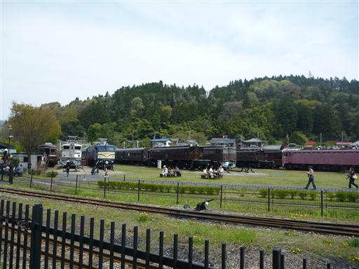
横川駅からは信越本線で高崎に、高崎駅からは両毛線で栃木駅に向かう。
乗換時間が有り余った栃木駅で周辺を散策していると、カモのつがいが気持ち良さそうに泳いでいる。

栃木駅からは東武線に乗り換え、ようやく会津高原尾瀬口駅に到着。
もう夕暮で、辺りは閑散としている。
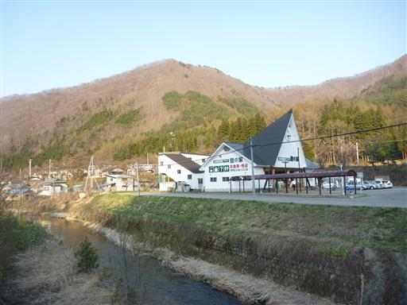
ここからバスへの乗換も接続が非常に悪いため付近を散策する。
駅前を流れる川には、小さいが美しい滝がある。
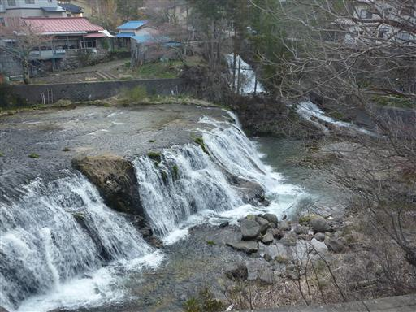
19:08 森の温泉館アルザ前バス停到着。標高905m。
今夜は見通りキャンプ場にテントを張る。辺りはもう真暗だ。
テントサイトは多数のテントで埋まっていて賑わっている。
テントを張ると、夕飯を食べてすぐに寝る。疲れた1日だった。
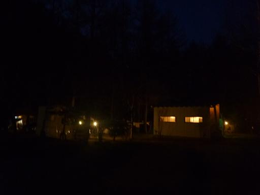
当日
今日は会津駒ヶ岳を目指す。朝3時に起床、4:03出発。
和名倉山登山のときに、4:30でも十分に明るいと分かったので、
できる限り早く出発することにする。
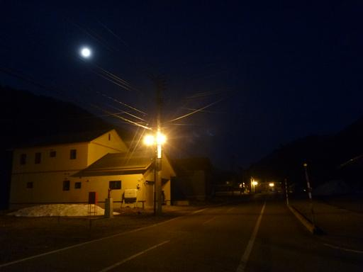
10分ほど車道を歩いて会津駒ヶ岳登山口に到着。
ここの小さなスペースに車を停めてテントを張っている人がいた。そういう手もあったか。

ここからもしばらくは林道を歩き、本格的な登山口に到着する。
もう山道でも十分歩けるくらい明るくなった。
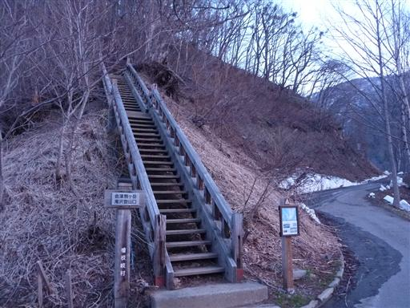
夜明け前の空。空の色が非常に美しい。今日は快晴だ。
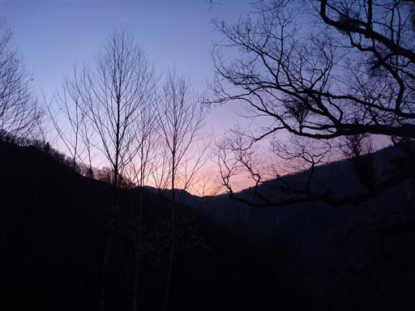
樹林帯の中で日の出を迎える。
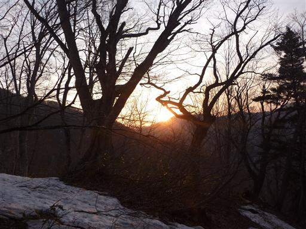
あたりの木々や雪が赤く輝き出す。
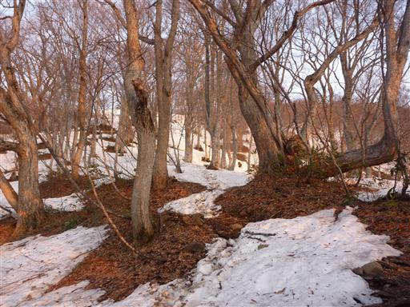
少し展望の開けるところに出てくる。大展望とはいかないが、近くの山々が見渡せる。
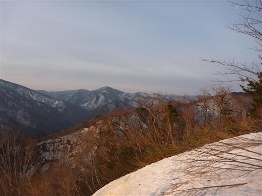
登山道の雪が増えてくる。雪は堅く締まっていて非常に歩きやすい。
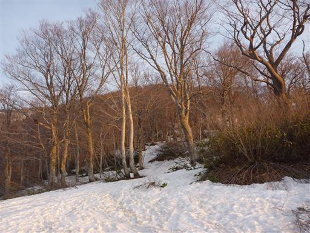
標識も下の方は埋まっている。標識が埋まっても足跡が無数にあるので迷うことはなさそうだ。
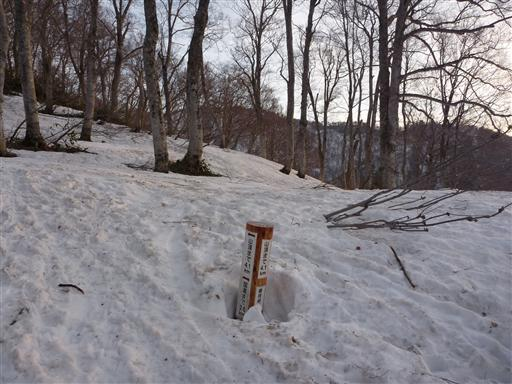
所々で傾斜は急になる。なだらかな山との印象があったが、
下のほうの登山道では急斜面もあるようだ。
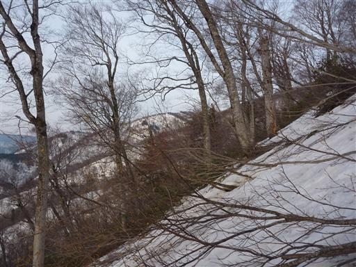
木の周りは円形状に雪が解けている。積雪量は1m弱だろうか。
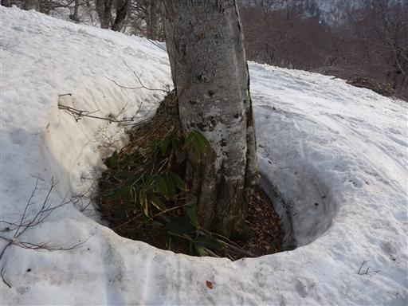
右手に大戸沢岳が見えてきた。一面雪がべったり付いて真白だ。
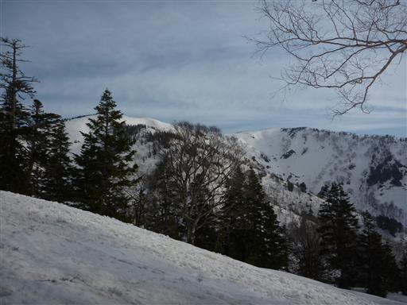
左手には燧ヶ岳が姿を現す。この辺りでは一番標高が高く良く目立つ。

しばらく登ると樹林帯を抜けて会津駒ヶ岳が姿を現す。非常になだらかでゆったりとしたピークだ。
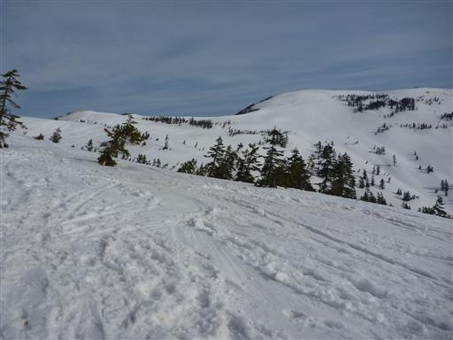
この辺りは無数の足跡と、スキーで滑った跡がある。スキーがあると下山は楽だろう。
非常に楽しそうだが、残念ながらスキーはできない。
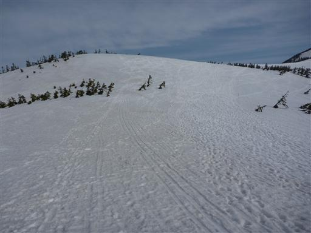
遠く会津の山々を望む。どこまでも山が折り重なっている。
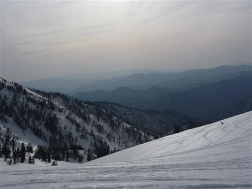
山頂直下でテントを張っている人がいる。雪上テントも楽しそうだが、それなりの技術が必要だ。
山頂から望むご来光はさぞ美しかっただろう。
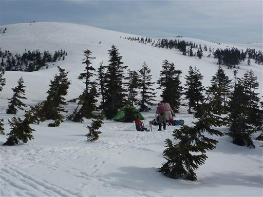
ここからはなだらかな斜面が広がるのみ。道など無いので適当に歩きやすいところを登っていく。
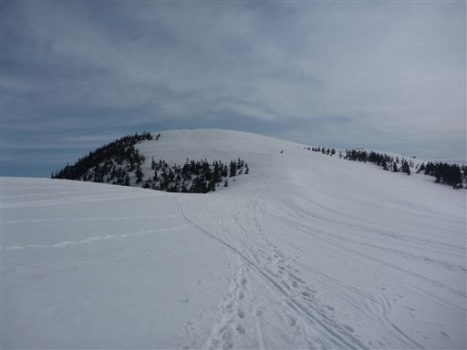
尾瀬近辺では珍しい山中にある営業小屋。今は雪に埋もれていて利用不可能だ。
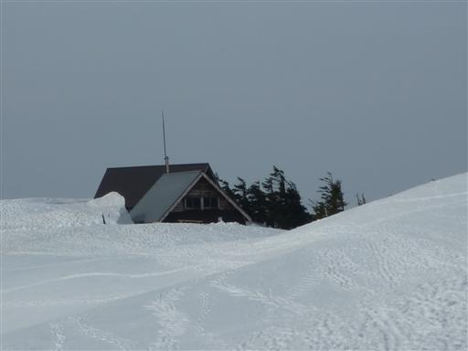
6:50 会津駒ヶ岳山頂到着。標高2133m。
奥には燧ヶ岳と、その右に至仏山が望める。尾瀬を代表する2峰だ。
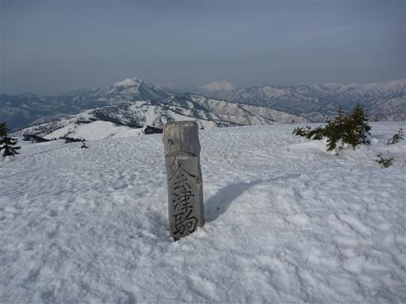
山頂は非常に広い。山頂標識がほとんど埋まるほど雪が積もっているので、
邪魔する木々も無く360度の大展望が広がる。
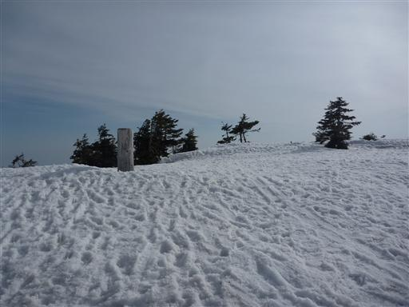
中門岳に続く稜線。そちらに向かっている人が小さく見える。
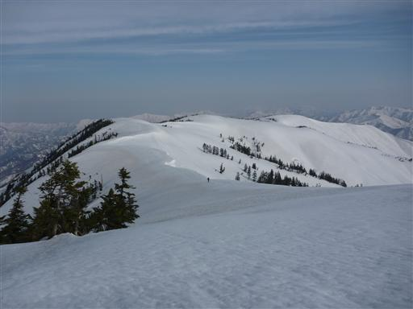
西方には越後駒ヶ岳と中ノ岳が良く目立っている。
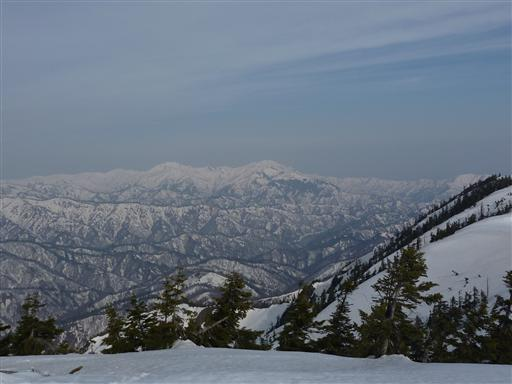
右手に見えるピークは三岩岳。マイナーな山だがなかなか存在感がある。
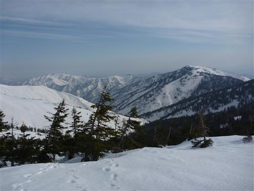
遠く日光白根山が見えている。日光、会津、越後の山々が見渡せる。
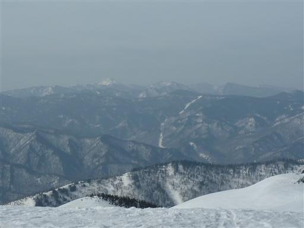
まだ7時で時間は十分にある。当初は登った道を下ろうと思っていたが
計画を変更して三岩岳まで縦走することにする。
このルートは登山道が無いので積雪期しか歩くことができない。
途中での計画変更は御法度だが、この天候なら問題は無いだろう。
三岩岳に続く稜線もなだらかで、非常に快適そうだ。
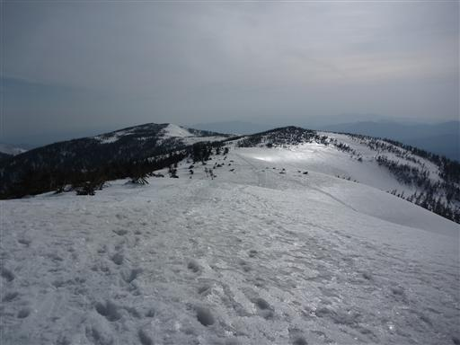
雪に埋まった木の先っぽを適当に避けながら歩いていく。
夏はどのような景色が広がるのだろうか？
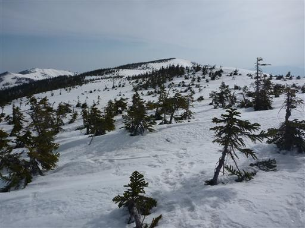
中門岳方面は純白の雪で覆われている。
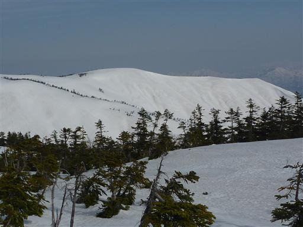
雪面が波うっている。なぜこのような形になるのか不思議だ。
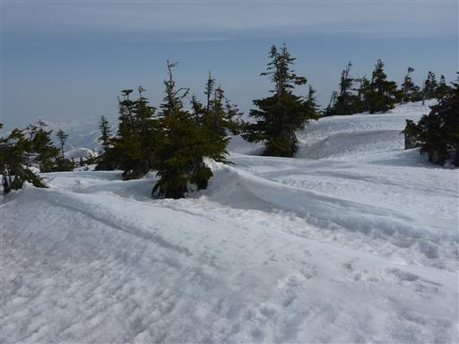
会津駒ヶ岳～三岩岳はそれなりに有名な縦走路なのか、足跡はついている。
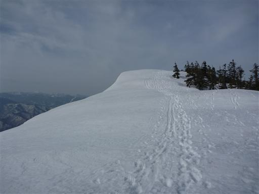
スキーを履いた人とすれ違う。会津駒ヶ岳から滑り降りるのだろう。
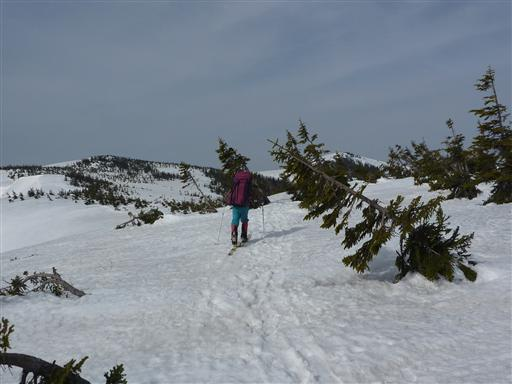
目の前に三岩岳が見えてきた。会津駒ヶ岳以上に立派な山容だ。
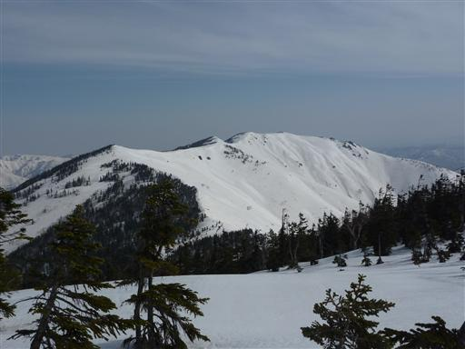
右側はそれなりの急斜面。雪庇ができていて、少しクラックが入っている。
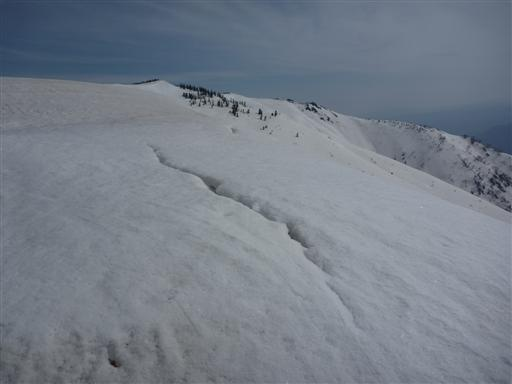
下を覗くと雪崩が起きそうな急な斜面が広がっている。
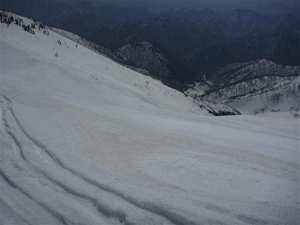
展望の良い縦走路。広がる展望がまた素晴らしい。
遠く会津朝日岳も見えている。ここから会津朝日岳までの縦走は
挑戦しがいのある名ルートらしい。
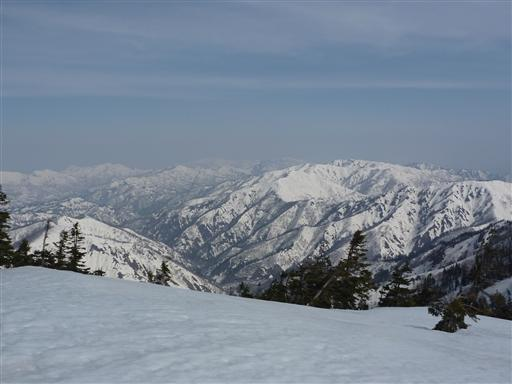
振り返ると会津駒ヶ岳（中央奥）はもう遠い。
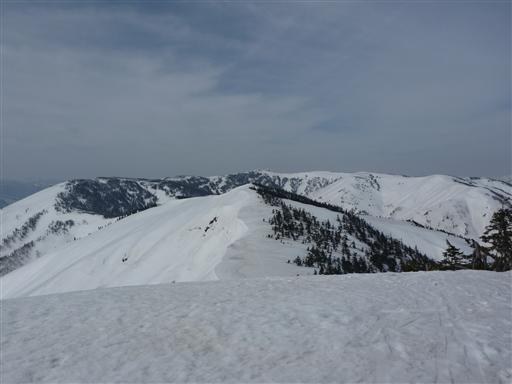
三岩岳の一角に到着。辺りは平らな雪原だ。
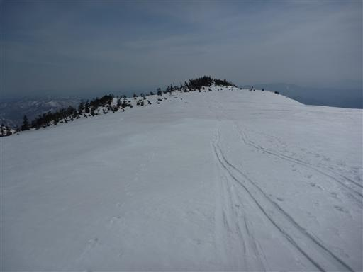
太陽はだいぶ高くなり、雪の表面が少し解けてきた。足が少し潜り、歩きにくくなる。
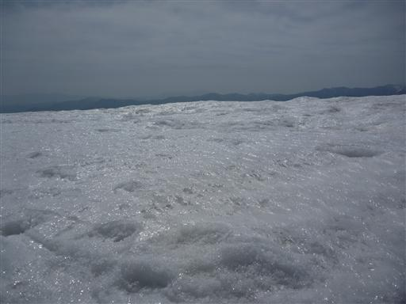
8:44 三岩岳山頂到着。標高2065m。
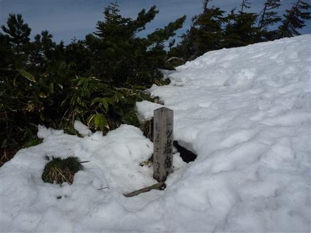
当然この山頂からの展望も素晴らしい。青い空と薄い雲が美しい。
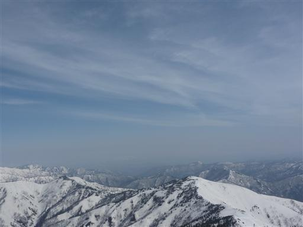
山頂直下に建つ避難小屋。もともとはこの小屋を使用しようと思っていたが、
確かに雪に埋まっていて使えない。
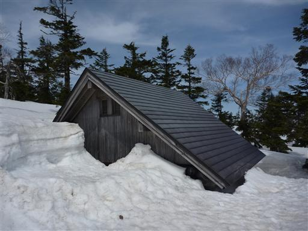
窓から中を覗いてみる。どんな非常事態でもこの窓から中に入るのは難しそうだ。
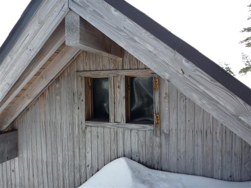
アイゼンを外して急斜面を滑るようにして下っていく。
下から人が登ってくる。この急斜面を登るのは辛いだろう。
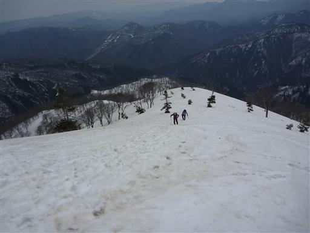
見上げると窓明山が大きい。
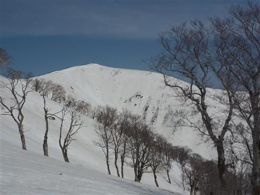
雪面の下りは速い。あっという間に雪の無いところに下りてくる。
藪が雪をはねのけて立ち上がろうとしている。
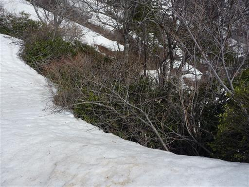
振り返ると三岩岳はもう遥かな高みだ。
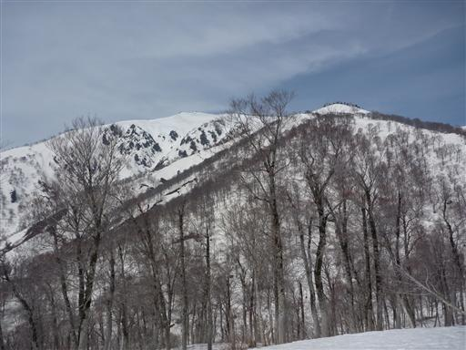
下山道は途中で沢沿いの新道と尾根沿いの旧道に分かれる。
さすがに雪のある時期に沢沿いを歩く人はいないのか、分岐点にも踏み跡はなかった。
尾根沿いの旧道は転げ落ちそうなほど急な坂道で、かなり歩きにくい。

道端にイワウチワの花が咲いている。登山道の両脇に延々と大群落をつくっている。
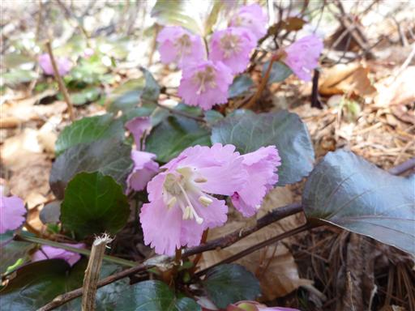
10:23 三岩岳登山道入口到着。標高780m。
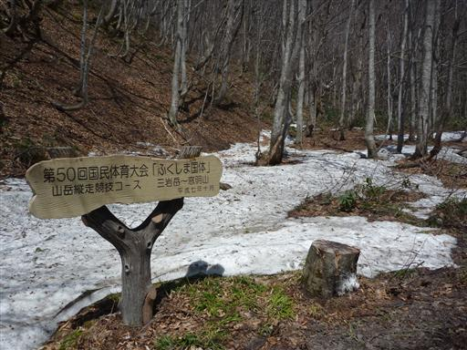
気温は18度。下界も場所によってはまだ雪が残っているのだが、この気温ではすぐ解けそうだ。
この辺りは温泉地帯。バスまで1時間ほどあるので近くの「窓明の湯」に寄っていく。
あずき温泉バス停はスノーブリッジの中にある。
雪が残っている標高の高い山なので行く前は少々不安だったが、
快晴に恵まれたこともあり、絶景を見渡す日帰りハイキングを堪能できた。
明日も快晴予報。尾瀬ヶ原に後ろ髪を引かれつつ帰宅する。